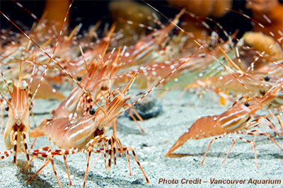

Pacific Prawn Fishermen’s Association
Our focus has always been on the continuing sustainability of the BC prawn fishery.
About us
The Pacific Prawn Fishermen’s Association was formed in 2000. It is a registered society representing the vast majority of the commercial prawn vessel owners on the BC coast. PPFA serves as the administrative body for the industry and provides programs and services on behalf of the membership and the commercial fishery.
- The purposes of the society are:
- To promote the welfare and defend the interests of B.C. prawn fishermen;
- To provide official representation of and for B.C. prawn fishermen in dealings with federal and provincial government departments, boards and agencies;
- To provide official representation of and for B.C. prawn fishermen in dealings with other organizations in the fishing industry;
- To explore and develop programs and policies for the protection and conservation of the pacific prawn fishery both independently and in conjunction with federal and provincial government departments, boards and agencies;
- To make recommendations to the Department of Fisheries and Oceans and other federal and provincial government officials regarding the B.C. prawn industry;
- To promote legislation, regulations and government policies which may benefit B.C. prawn fishermen and the pacific prawn fishery, generally, and to oppose such legislation, regulations and policies which may be detrimental to B.C. prawn fishermen and to the pacific prawn fishery, generally.
The PPFA is governed by an 11 person Board of Directors, elected from the membership once every 3 years. The Board meets periodically and provides policy guidance and operational direction on issues confronting the industry. An administrative staff implements these decisions and manages the day-to-day affairs to the organization.
Our focus has always been on the continuing sustainability of the BC prawn fishery. We do this in a number of ways but by working collaboratively with partners and funding science and enforcement programs, we work towards ensuring a healthy fishery for tomorrow.
Spot Prawn (Pandalus Platyceros)
Prawns are found along the Pacific Coast of North America from Southern California to Alaska, and live in subtidal sandy and rocky habitats. Fished by trap, prawns are typically harvested from ocean depths ranging from 50 to 150 meters. Prawns are hermaphroditic, beginning life as male and transitioning to female around the two-year stage of their estimated four-year lifespan. 
The largest of our local shrimp species, spot prawns generally grow to a length of 20cm. Prawns range from bright orange to tan in colour, with a distinctive white spot at each end of the carapace, and horizontal white stripes along the head.
The prawn fishery is limited entry, with a current maximum of 250 prawn licenses. Licenses are not managed by area, meaning that access is coast-wide. Each license may fish up to 300 traps, with the restriction of hauling each trap once per day, between the hours of 7am and 7pm. Up to two licenses can be fished on one vessel, which is referred to as ‘stacking’; in this case a stacked vessel can fish a maximum of 500 traps, once per day.
Traps are snapped or fixed onto a groundline, and set along the ocean floor. 6 lines of gear is maximum for 300 traps, and 10 lines for a stacked vessel. Commercial traps must meet with criteria which is designed to prevent by-catch of undersize prawns, (minimum mesh hole size), and prevent the trap from continual fishing if lost on the ocean floor (use of rot cord, which allows the trap to open freely after disintegration). Maximum trap size, number and size of entrance openings, and mandatory non-solid sides, are also measures taken to maintain sustainability of the fishery.
B.C.’s commercial prawn fishing season opens in May and generally closes in mid to late June. Spawner Index sampling, which provides data on the number of spawners and quantity of prawns by age class in each area, assists in determining closure dates for each area and then for the fishery coastwide. Other factors, such as number of vessels fishing in an area, are also considered. Winter is when most spawners become ‘berried’ or carry eggs, and when eggs are released. For this reason, commercial fishing takes place well away from winter months. Recreational fishing closures often occur during Winter months for this reason also, when the number of spawners in an area may indicate a need for additional protection. The commercial prawn and shrimp by trap fishery is one of the most valuable in the Pacific Region, accounting for a landed value of $35.3 million in 2013. For many years, until the mid-2000s, prawns were almost exclusively exported to Japan. Prawns are now enjoying a higher demand in other export markets such as China, as well as in domestic markets. A strong and expanding desire for sourcing local and sustainable food has put a bright spotlight on the B.C. wild prawn, and domestic demand is expected to show continual growth.